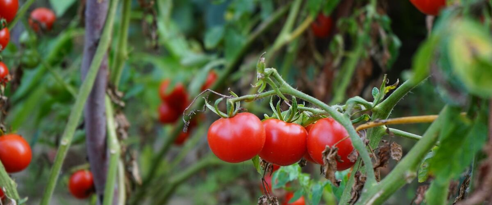

When to plant tomatoes and summer crops in the Northwest
Heat lovers that wait for warm soil. Pick a plant for its dates in every city we cover and a step-by-step growing guide.


Planting windows at a glance
Main planting window in four reference cities. Each plant's page has every city.
| Plant | Portland | Seattle and Tacoma | Bend and Redmond | Spokane |
|---|---|---|---|---|
| Tomatoes | May 10 – Jun 7 | May 10 – Jun 7 | Jun 9 – Jul 7 | May 20 – Jun 17 |
| Peppers | May 10–31 | May 10–31 | Jun 9–30 | May 20 – Jun 10 |
| Eggplant | May 10–31 | May 10–31 | Jun 9–30 | May 20 – Jun 10 |
| Sweet corn | May 10 – Jun 14 | May 10 – Jun 14 | Jun 16 – Jul 21 | May 15 – Jun 19 |